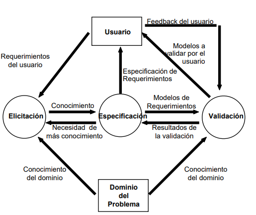

Marcás palabras y elegís un color de marcador. El mismo color otra vez lo saca. Título pone un encabezado. Texto sigue en párrafo. Lista arma viñetas.
Entrevista
Todavía no hay un caso abierto
Este chat es el contexto. Preguntá de a una cosa: la persona no suelta todo el problema y te va a repreguntar hasta que ustedes cierren el dominio.
Especificación
Dominio del problema
El contexto es el chat de la izquierda. De ahí sale el dominio, el interés o necesidad, un conflicto y —si aparece— un gap semántico. Después, dos necesidades, dos deseos y dos expectativas contadas como el problema. Acá no se escriben requerimientos de usuario ni de sistema.
De la entrevista
Salen del chat (clase 2). El gap semántico solo si aparece: si no, dejalo vacío.
Ejemplo: Administración necesita ordenar los turnos para que el paciente no dependa de la ventanilla y de las llamadas.
Ejemplo: El médico quiere menos carga de agenda; administración quiere menos huecos vacíos; el paciente quiere elegir horario.
Ejemplo: “Urgente” para administración es “llegó sin turno”; para el médico es “no puede esperar”.
Del dominio: 2 de cada tipo
Salen del chat. Se cuentan como el problema. No se escriben como requerimiento (“el sistema debe” / “el usuario quiere”).
Necesidades
El problema de fondo: de qué dependen hoy y por qué eso motiva el proyecto.
Ejemplo (billetera virtual): Los clientes dependen de la sucursal o de transferencias tradicionales lentas y complicadas para manejar sus pagos. Ese es el problema de fondo que motiva todo el proyecto.
Deseos
Un extra atractivo que suma, pero el proyecto podría arrancar sin él.
Ejemplo (billetera virtual): Los beneficios adicionales para fomentar la adopción, como devolución de un porcentaje en pagos, sorteos mensuales o descuentos en comercios asociados. Son atractivos y suman valor, pero no son indispensables para que la billetera resuelva el problema central.
Expectativas
Qué esperan: experiencia, costo, seguridad, no quedar atrás. No es un RF.
Ejemplo (billetera virtual): Que la billetera mejore la experiencia del cliente, que no genere un costo extra (o que el beneficio lo justifique), que sea segura tanto en transacciones como en datos, y que ayude a la empresa a no quedar atrás frente a competidores como Mercado Pago o Modo.
La IA mira el formato, la coherencia, la redacción (mayúsculas, puntos, tildes) y te dice qué mejorar.
Gráfico de Loucopoulos, flecha por flecha
Es el proceso de elicitación, especificación y validación. Primero ubicá las cinco cajas; después explicá toda la relación, flecha por flecha: de dónde sale, a dónde va y qué viaja por esa flecha. Después podés comparar con la teoría.

Las cinco cajas (para ubicar las flechas)
- Dominio del problema — el mundo real.
- Usuario — quien vive ese dominio.
- Elicitación — sonsacar conocimiento.
- Especificación — modelos de requerimientos.
- Validación — chequear esos modelos.
Cada relación
En cada flecha escribí qué conecta y por qué existe. Las de ida y vuelta se escriben por separado.
Teoría
Práctica de teoría
Elegí una clase y practicá todas sus preguntas (el banco cubre las seis clases). El simulacro mezcla 20, como en un examen.
Trabajos
Solo las prácticas que ya se corrigieron. Tocá la flecha para abrir la que te interesa.
Ajustes
Modelo
Elegí con qué modelo querés trabajar.